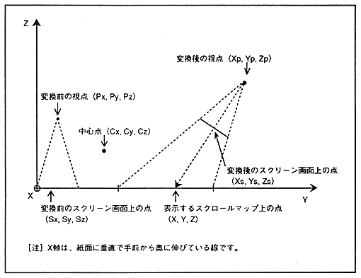
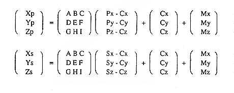

∙ From the formula of rotation conversion, the viewpoint coordinates after conversion and the screen screen coordinates after conversion are expressed by the following formula.

A, B, C, D, E, F, G, H, I: Rotation matrix parameters Px, Py, Pz: viewpoint coordinates before rotation conversion Sx, Sy, Sz: Screen screen coordinates before rotation conversion Cx, Cy, Cz: Center coordinates of rotation Mx, My, Mz: parallel displacement Xp, Yp, Zp: Viewpoint coordinates after rotation conversion Xs, Ys, Zs: Screen screen coordinates after rotation conversion